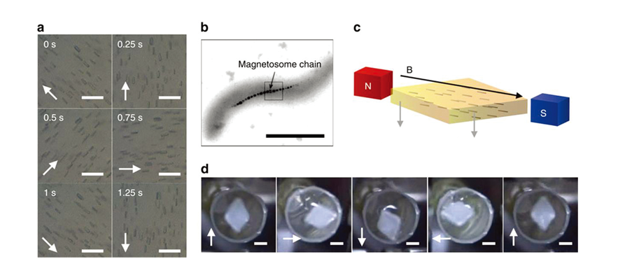
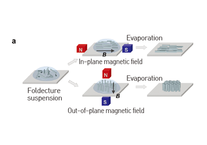
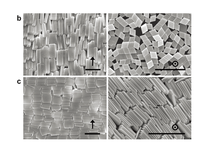

Report by Subjects
Report by Subjects
KAIST RESEARCH ACHIEVEMENTS
Magnetotactic
peptide compass
Department of Chemistry Hee-Seung Lee
Summary
In 2050, human lifespans are much longer by virtue of molecular-based medical equipment that is capable of activating the muscles of people suffering from paralysis using external magnetic stimulation.
R&D Report
The design of stimuli-responsive molecular systems capable of performing macroscopic mechanical work is one of the most important challenges in synthetic chemistry and materials science. However, real-time motion control of diamagnetic molecules, such as peptides, is hampered by the low magnetic susceptibility of such molecules. We have successfully developed a peptide compass, composed exclusively of organic molecules, by using foldectures created through the self-assembly of helical peptides. Their uniform alignment with respect to an applied static magnetic field and instantaneous alignment in a dynamic magnetic field were achieved even under one-tesla magnetic fields, lower than that of an MRI machine. This study will provide significant inspiration for the design of the next generation of biocompatible, peptide-based molecular machines with applications in biological systems.
The design of materials that transform external stimuli into macroscopic mechanical motion have drawn increasing attention in synthetic chemistry and materials science. Magnetic stimulation has rarely been applied to stimuli-responsive, organic molecular systems, although it is a well-known and powerful tool for the non-invasive stimulation of ferromagnetic or paramagnetic molecular systems. This is because the magnetic susceptibility of most diamagnetic organic molecules is too weak to overcome Brownian motion. Accordingly, the realization of real-time motion control of diamagnetic molecules via magnetic stimulation is regarded as a formidable task. However, diamagnetic alignment is theoretically possible through the generation of well-ordered systems of diamagnetic molecules capable of overcoming Brownian motion.

Fig 1. (a) Optical microscopy images showing real-time alignment of foldectures upon application of an external rotating magnetic field;
(b) Scanning electron microscope (SEM) image of magnetotactic bacteria;
(c) Schematic representation of a magnetosome-inspired,
hydrogel-based magnetic compass;
(d) Real-time alignment of an organic magnetic compass
a few millimeters in diameter under a rotating magnetic field.
In this study, we have developed a peptide compass composed exclusively of organic molecules for the first time. The self-assembled molecular architectures of helical peptides created and designed by our group, which we refer to as "foldecture", are non-metal organic materials with distinctive morphologies and uniform size. We observed that foldectures align with respect to an applied static magnetic field and exhibit instantaneous directional motion when exposed to a dynamic magnetic field of around one tesla, which is less than that produced by MRI machines. These phenomena are caused by the amplified anisotropy of the diamagnetic susceptibilities as a result of the well-ordered molecular packing of the foldectures. In addition, we invented a hydrogel magnetic compass, which was inspired by the magnetosome, or biological magnetic compass, of magnetotactic bacteria. This organic magnetic compass demonstrates the responsiveness of foldectures to an external rotating magnetic field of 30 rotations per minute. These results verify experimentally a new concept that minute responses of diamagnetic molecules can be amplified to achieve macroscopic motion. We expect that these results, combined with technical improvement in the modulation of dynamic magnetic fields in the future, will offer attractive opportunities for the use of organic diamagnetic supramolecular materials as biofunctional nano- and micro-machines.
This exploration of the diamagnetic alignment of a self-assembled peptide system opens new vistas in diamagnetic molecule research. Furthermore, these results have diverse applications in many fields of applied research, such as stimuli-responsive molecular machines and motion control of organic nanomaterials, as well as basic science, including the self-assembly of foldamer-based materials.
 Fig 2. (a) Schematic diagram of experimental process to achieve the alignment of foldectures under a static magnetic field;
 Fig 3. (b-c) SEM images of aligned foldectures under a static magnetic field.
Research Funding
ㆍThis research was supported by the Samsung Science and Technology Foundation (Project No. SSTF-BA1301-08).
Research Outcomes
ㆍPaper : Magnetotactic Molecular Architectures from Self-Assembly of Peptide Foldamers, Nature Communications, 6:8747 (2015).
ㆍPatent : Magnetotactic self-assembly molecular architectures and preparation method thereof, Republic of Korea patent, 10-2015- 0188482